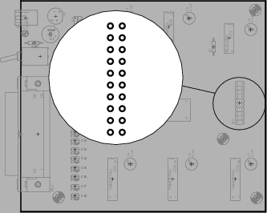
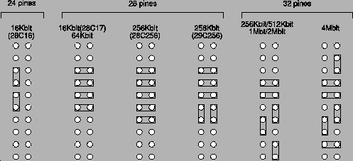
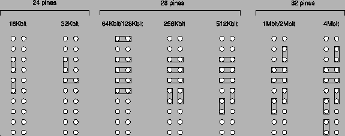

Figure:
Ubicación de los jumpers de
selección de memoria
|

|
Figure:
Configuración de jumpers para memorias
Flash
|

|
Figure:
Configuración de jumpers para memorias
EPROM
|

|
Antes de colocar la memoria hay que adaptar el circuito al tipo y
tamaño de la memoria. Esto se hace configurando el grupo de jumpers
que encontrará la derecha de la placa (figura ![[*]](crossref.png) ).
Las figuras y muestran
cómo deben colocarse los puentes para las de memorias Flash y EPROM
(éstas sólo para lectura) compatibles con este programador. La orientación
del grupo de pines en estos esquemas es la misma que se aprecia en
la figura .
).
Las figuras y muestran
cómo deben colocarse los puentes para las de memorias Flash y EPROM
(éstas sólo para lectura) compatibles con este programador. La orientación
del grupo de pines en estos esquemas es la misma que se aprecia en
la figura .
La colocación y extracción de la memoria debe realizarse siempre con
el circuito apagado para evitar causar daños a ésta. La orientación
de la muesca del integrado debe coincidir con la orientación de la
muesca en el zócalo. Los integrados de menos de 32 patillas se colocarán
haciendo coincidir los extremos sin muesca del integrado y del zócalo.
Luis M. Cruz - Octubre 2003